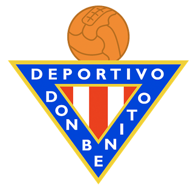

Indice
Inicio
Estructura de Competiciones
Divisiones con Participación Extremeña
Primera RFEF
A.D. Merida
Segunda RFEF
Grupo 4
C.F. Villanovense
 C.D. Don Benito
Grupo 5
C.D. Coria
C.P. Cacereño
 Primera RFEF
Primera RFEF A.D. Merida Primera RFEF A.D. Merida
A.D. Merida Primera RFEF A.D. Merida Segunda RFEF
Segunda RFEF C.F. Villanovense
C.F. Villanovense C.D. Coria
C.D. Coria C.P. Cacereño
C.P. Cacereño